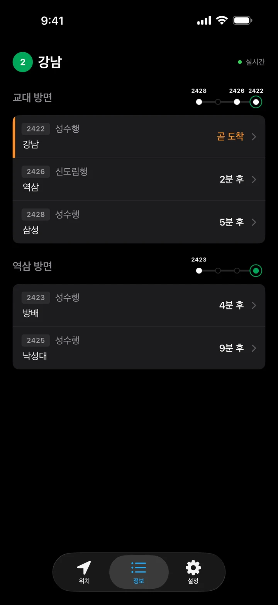
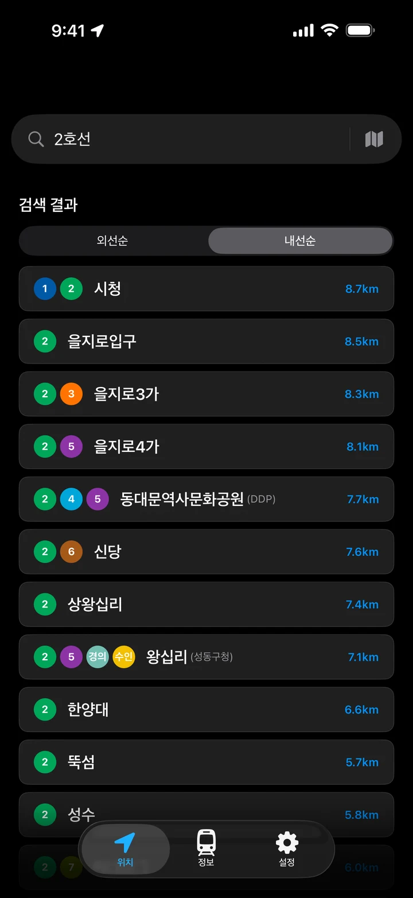
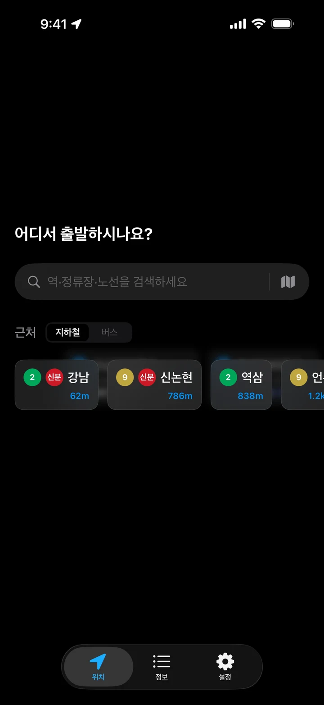

다이내믹 아일랜드
앱을 열지 않아도
앱을 열지 않아도
현재 역이 보입니다
열차를 따라가며 다이내믹 아일랜드와 잠금화면에 지금 역을 띄웁니다. 내릴 역이 가까워지면 알려 드립니다.
지하철·버스 실시간 알림
전광판을 보지 않아도 됩니다. 다이내믹 아일랜드와 잠금화면에서 지금 어느 역인지 알려 드리고, 버스는 몇 정거장 전인지 한눈에 보여 드립니다.
폰으로 스캔카메라를 대면
앱 페이지가 열려요
내릴 역과 오는 차를 폰 하나로 확인합니다.
열차를 따라가며 다이내믹 아일랜드와 잠금화면에 지금 역을 띄웁니다. 내릴 역이 가까워지면 알려 드립니다.
방면마다 오는 열차와 도착 시간을 보여 줍니다. 열차가 앞 역 몇 개 전에 있는지 그림으로 한눈에 봅니다.

정류장에 오는 버스를 도착 전 정류장 그림으로 보여 줍니다. 운행 중, 출발 대기, 운행 종료 노선을 나눠 봅니다.
호선을 입력하면 그 노선의 역이 순서대로 나옵니다. 환승역은 색 뱃지로 구분됩니다.

지금 있는 곳에서 가까운 지하철역과 버스 정류장을 거리 순으로 보여 줍니다. 지하철과 버스는 한 번에 바꿔 볼 수 있습니다.
